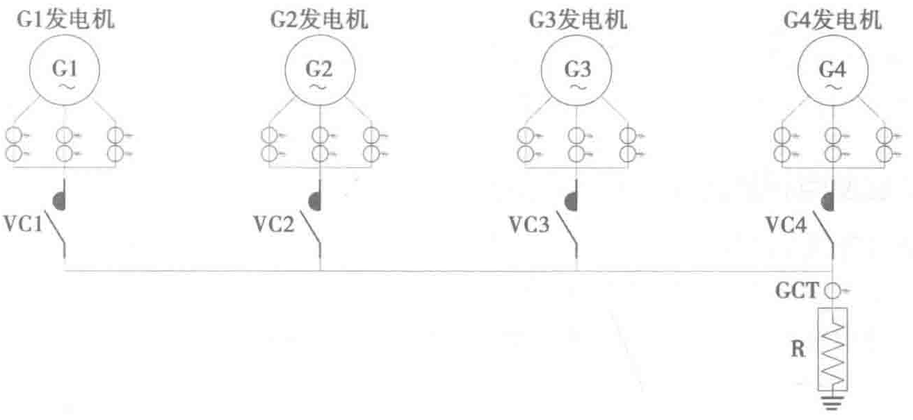

正确接地可以防止“接触电压”，有助于在接地故障期间切断保护装置并有效防止人身触电。电源上的接地跳线将设备接地系统与交流系统接地导线（中线）连接在一点。接地连接位置位于交流发电机的机架上，如果配备了机组断路器，则在断路器防护罩内提供接地端子。大功率柴油发电机组一般都单独设置输出柜。严格来讲，为保证人员安全，机组旁应设置安全输出隔离柜。
柴油发电机系统中性点的接地方式宜与市电接地系统相同，具体参照数据中心设计规范GB 50174—2017第8.4.9～10条相关内容。
6. 发电机组中性线单接地与多接地分析
（1）发电机组单中性线电阻系统（见图5-10）：
- 无环流；
- 结构简单；
- 占地面积小。

（2）发电机组多中性线电阻系统（见图5-11）：
- 有可能形成环流；
- 结构复杂；
- 占地面积大。
5.5 发电机房及储油罐区选址
随着数据中心的规模增长，发电机供电系统的需求容量也越来越大。初期投资成本一直居高不下，以下两点可以降低投资建设初期成本过高的问题。
- 柴油发电机房独立建设。在建设用地宽裕的情况下，可以考虑将发电机供电系统设置在独立的建筑内，这样可以集中放置机组设施设备，最大限度地减少数据中心的建筑面积，降低数据中心主体结构的建设成本。而且独立设置的柴发机房使得发电